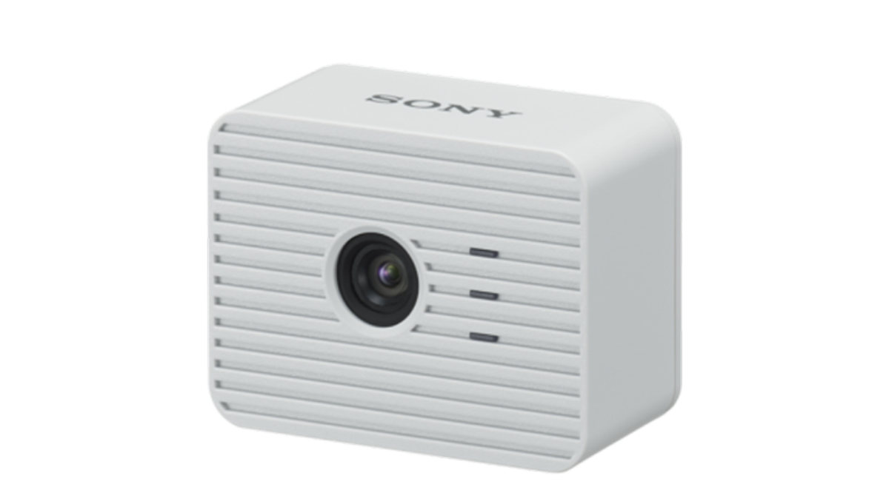

A WireGuard VPN that works as a normal network device, wg0 — on real boards, and inside a NuttX kernel build (on QEMU).
ESP32-S3 & SPRESENSETUNNEL UP OVER REAL WI-FI
Real WireGuard peersLINUX KERNEL, WINDOWS CLIENT
rv-virt knetnsh64KERNEL BUILD ON QEMU (BUILD_KERNEL)
NuttX 13.0.1 / master / 12.7.0APPS V0.1.1 · ONE SOURCE
Satoru Akita / Sony Semiconductor Solutions
Apache NuttX

AITRIOS edge AI device (ESP32)
SPRESENSE
1 / 40
Today I will talk about adding WireGuard to Apache NuttX.
||
It is a WireGuard VPN (virtual private network) that works as a network device called wg0. The tunnel runs over real Wi-Fi on ESP32-S3 and on SPRESENSE, and the other side is always a real WireGuard program — the Linux kernel module and the official Windows client. The apps version builds from one source on three NuttX versions. Later in the talk, you will see the new driver running inside KERNEL and PROTECTED builds on QEMU (a machine emulator), and in normal FLAT builds on both boards. That is the harder and more interesting half.
||
This talk is about what “it works” was hiding, and what moving it into the kernel brought out.
About Me
Satoru Akita — edge AI engineer at Sony Semiconductor Solutions, working with Apache NuttX from the application side.
my icon on social media
Hobby engineer
SpaceSemiconductorsDNA nanotechRobotsLinux
🎯 Many hackathons🎤 Runs software conferences📖 Wrote a book on open source
2 / 40
First, a little about me.
||
I am an edge AI engineer at Sony Semiconductor Solutions. I work with Apache NuttX from the application side. I am from Japan: born in Nagoya, university in Sendai, and now I live in Kawasaki. Outside work, I am a hobby engineer. I build things around space, semiconductors and robots, I made DNA nanostructures at university, and I love Linux. On social media, I am the fox in this picture. I often join hackathons, I help run software conferences, and I wrote a book about open source.
||
My road to this project went through molecular robots, computer vision and AI systems, edge AI cameras, and embedded systems on SPRESENSE. NuttX and WireGuard are the latest stop on that road.
Agenda
1
Overview & background
What NuttX is · how this started
~5 MIN
2
The problem and the idea
Reaching a device far away · why WireGuard
~4 MIN
3
The plan
Reuse wireguard-lwip · fit it into NuttX
~2 MIN
4
Version 1: the app
First tunnel · six bugs, two in detail · first demo
~4 MIN
5
Version 2: the kernel driver
Why a driver · a bug in NuttX · testing
~7 MIN
6
Live demo
StackChan through the tunnel
~3 MIN
7
Summary & status
Where it stands · what I learned · thanks
~4 MIN
3 / 40
Here is the plan for this talk.
||
There are seven parts. First, an overview and the background: what NuttX is, and how this started. Second, the problem I wanted to solve, and the idea. Third, the plan. Fourth, version one, an app: the first tunnel, the bugs it hid, and the first demo. Fifth, version two, the kernel driver: why I moved it, a bug in NuttX itself, and how I tested it. Sixth, a live demo with the StackChan. And last, where the work stands, what I learned, and a summary. About thirty minutes, then questions.
Agenda
1
Overview & background
What NuttX is · how this started
~5 MIN
2
The problem and the idea
Reaching a device far away · why WireGuard
~4 MIN
3
The plan
Reuse wireguard-lwip · fit it into NuttX
~2 MIN
4
Version 1: the app
First tunnel · six bugs, two in detail · first demo
~4 MIN
5
Version 2: the kernel driver
Why a driver · a bug in NuttX · testing
~7 MIN
6
Live demo
StackChan through the tunnel
~3 MIN
7
Summary & status
Where it stands · what I learned · thanks
~4 MIN
PART 14 / 40
Let's start with part one: an overview and the background.
Project Overview
Packets sent to wg0 are encrypted and sent out as UDP. UDP that comes in is decrypted and handed over as if it came in on wg0. The other side can be any normal WireGuard peer.
Takeaway
Apps see wg0 as a normal network interface. Only the "wire" under it is different: a UDP socket, not a cable.
PART 1 · 1/65 / 40
Here is the whole idea in one picture.
||
Apache NuttX is an RTOS (real-time operating system) that follows POSIX (the Portable Operating System Interface) and has its own TCP/IP stack. It had no VPN. This project adds wg0 as a virtual network interface. Applications see a normal interface. Under it, the encrypted data travels over a UDP socket. The other side is a real WireGuard peer — Linux, Windows, or another gateway.
||
Because NuttX follows POSIX and uses BSD sockets, it is a good fit for this work. FreeRTOS and Zephyr can run a VPN too. But on NuttX, a VPN can become a normal network device very naturally.
How it started
MID FEBRead the GSoC idea list. Started to study.
EARLY MARProposed the plan.
MAR 20Alan told me about this conference. Submitted a talk.
EARLY APRSent the GSoC proposal.
EARLY MAYTalk accepted. GSoC proposal not selected. Kept going anyway.
OCT 11–14Glasgow — this talk.
FEB
MAR
APR
MAY
JUN
JUL
AUG
SEP
OCT
JUN – JULBuilding a little at a time
AUG HOLIDAYMost of the work
SEP –FLAT app → kernel driver
DEVELOPMENT
Takeaway
The GSoC proposal was not selected, but the work went on. The kernel driver, the harder half, came last.
PART 1 · 2/66 / 40
Here is how this project went, month by month.
||
In the middle of February, I read the GSoC idea list and started to look into it. In early March, I wrote my plan as an issue and proposed it. On March 20, Alan told me about this conference, so I sent a talk proposal. In early April, I sent my GSoC proposal.
||
In early May, I got two answers. The talk was accepted, and the GSoC proposal was not. I decided to build it anyway.
||
From June, I worked on it a little at a time. I did most of the work during the summer holiday in August. In September, I moved it from a FLAT app into a kernel driver. That is the second half of this talk.
Background: What is Apache NuttX?
Apache NuttX
Built for microcontrollers
A small RTOS that keeps time-critical tasks predictable.
Familiar Unix interfaces
Applications use POSIX APIs, BSD sockets, files, and the NSH shell.
Open source at Apache
Developed in the open as an Apache top-level project.
Small device. Familiar Unix interfaces.
PART 1 · 3/67 / 40
First, what is NuttX?
||
NuttX is a real-time operating system for small embedded devices. It keeps time-critical tasks predictable, but it feels familiar to a Unix programmer: applications use POSIX APIs, BSD sockets, files, and a shell called NSH. It is also an Apache top-level project, developed in the open.
||
The one point I want you to remember is simple: small device, familiar Unix interfaces. That is why sockets and network devices fit naturally into the rest of this talk.
Background: Comparison with Other RTOSes
RTOS
Main focus
Typical use
FreeRTOS
Small real-time kernel
MCU firmware, control, IoT
Zephyr
All-in-one platform for connected devices
Wearables, industrial & connected IoT
NuttX
Unix-like embedded OS
Networking, file systems, drones, sensing
FreeRTOS/FreeRTOS 7.8k★ · zephyrproject-rtos/zephyr 16.5k★ · apache/nuttx 4.1k★ Stars show how many developers notice a project, not how many devices use it.
NuttX has fewer stars than FreeRTOS and Zephyr, but it already runs in real products, from drones to the Moon.
Sources: nuttx.apache.org · nuttx.apache.org/market-share · docs.px4.io · GitHub star counts, October 2026
PART 1 · 4/68 / 40
Thirty seconds on where NuttX fits, and whether it is a toy.
||
These are three good RTOSes, and each has a different focus. FreeRTOS is a small real-time kernel, on purpose, for MCU (microcontroller) firmware and control. Zephyr is an all-in-one platform for connected devices, wearables and industrial IoT. NuttX is the Unix-like one: networking, file systems and drivers, used in drones and sensing. This is not a ranking. By GitHub stars, NuttX is the smallest of the three, and I want to say that clearly. But stars show how many developers notice a project, not how many devices use it.
||
And it is really used. Upstream, NuttX supports more than fifteen CPU architectures, more than three hundred boards, and more than fifteen hundred configurations. In real products it runs in Sony devices, PX4 flight controllers, and more than a thousand Xiaomi OpenVela products, and it flew on Japan's 2024 Moon mission. It is small next to the big ones, but it is not a toy.
History: a long road with NuttX
2013–15
Early adoption
Ported NuttX to LC823425 / LC823450; first commercial audio products shipped in 2015.
2016–17
Commercial products
Walkman NW-WS620, SMR-10, ICD-TX800 and ICD-PX470 used NuttX.
2018
Xperia Ear Duo & SPRESENSE
Xperia Ear Duo shipped with CXD5602 / NuttX; SPRESENSE launched as a multicore development board.
2019–20
Upstream collaboration
Sony engineers upstreamed CXD56xx platform support and drivers, and shared the work in public NuttX talks.
2020s
Edge sensing
Expanded camera, GNSS, connectivity and edge-sensing capabilities.
Takeaway
Sony's NuttX journey began with audio products, expanded through SPRESENSE, and evolved into long-term open-source collaboration.
Sources: M. Ishikawa, Sony NuttX talks (2018–19) · Sony, “Running NuttX on Spresense” (2019) · A. Jerpelea (2020) · Apache NuttX CXD56xx docs
PART 1 · 5/69 / 40
This is Sony's history with NuttX. It is not my story yet, and it is older than edge AI.
||
The public record starts in 2013, when Sony engineers began porting NuttX to the LC823425 audio processor. Bluetooth and LC823450 followed in 2014, and the first commercial audio products shipped in 2015. Public examples include the Walkman NW-WS620, the SMR-10 personal sound amplifier, and the ICD-TX800 and ICD-PX470 voice recorders.
||
In 2018, Xperia Ear Duo shipped with Sony's CXD5602 and NuttX, while SPRESENSE made the same multicore platform available as a development board with GNSS, audio and camera support. In 2019 and 2020, Sony engineers documented the work and moved substantial CXD56xx platform and driver support upstream. In the 2020s, the platform's capabilities continued to expand across camera, GNSS, connectivity and edge sensing. That last point is about technical capability, not a claim that every feature shipped in a named product.
||
Sony's NuttX journey began with audio products, expanded through SPRESENSE, and evolved into long-term open-source collaboration.
||
[Sources]
M. Ishikawa and K. Okamoto, “SMP and Networking support on NuttX / LC823450,” 2018: https://events.nuttx.apache.org/wp-content/uploads/2019/11/MIshikawa_nx2019.pdf
Sony, “Running NuttX on Spresense,” NuttX Workshop 2019: https://events.nuttx.apache.org/wp-content/uploads/2019/11/TKoizumi_nx2019.pdf
A. Jerpelea, “A Journey from Fork to Mainline,” NuttX Online Workshop 2020: https://events.nuttx.apache.org/index.php/past-events/nuttx-online-workshop-2020/
Apache NuttX, Sony CXD56xx documentation: https://nuttx.apache.org/docs/latest/platforms/arm/cxd56xx/index.html
Experience: NuttX in SPRESENSE and AITRIOS
SPRESENSE
NuttX SDK · sensing & camera · GNSS / LTE · prototyping and embedded development.
AITRIOS / edge AI camera
Edge AI · setting up cameras · ESP32 + NuttX · running them on site, not on a desk.
Where I work: application development → system integration → deployment & operation.
Takeaway
My problem was not making NuttX run. It was reaching NuttX devices after they were installed.
PART 1 · 6/610 / 40
That was Sony's history. This is mine. Same hardware family, but I see it from a different place.
||
On SPRESENSE, I use the NuttX SDK for sensing, camera, GNSS and LTE — prototypes and embedded development, on the application side. On AITRIOS edge AI cameras, which are built with ESP32 and NuttX, my job is to set up cameras and keep them running on site, not on a desk next to a debugger.
||
In both cases, I come to NuttX from the same direction: first application development, then putting the system together, then setting it up and running it. I never had to write a NuttX driver for any of that — until this project. And the question that brought me here was not “How do I make NuttX run?” It was “How do I reach a NuttX device after it is installed?”
Agenda
1
Overview & background
What NuttX is · how this started
~5 MIN
2
The problem and the idea
Reaching a device far away · why WireGuard
~4 MIN
3
The plan
Reuse wireguard-lwip · fit it into NuttX
~2 MIN
4
Version 1: the app
First tunnel · six bugs, two in detail · first demo
~4 MIN
5
Version 2: the kernel driver
Why a driver · a bug in NuttX · testing
~7 MIN
6
Live demo
StackChan through the tunnel
~3 MIN
7
Summary & status
Where it stands · what I learned · thanks
~4 MIN
PART 211 / 40
That is the background. Part two: the problem I wanted to solve, and the idea.
Problem: Wi-Fi security stops too early
Open it to the Internet
Give the device a public IP and hope.
Make your own protocol
Build and maintain your own secure channel.
Use a vendor's cloud
Rely on someone else's cloud to reach your own device.
Takeaway
What was missing: a standard, secure path all the way to the NuttX device.
PART 2 · 1/412 / 40
Now, the problem itself.
||
Wi-Fi security is real, but it protects only one part of the path: the radio link between the device and the access point. Everything before that — the engineer, the Internet, the router — is outside what WPA2 or WPA3 (Wi-Fi security) can protect. What I needed was a secure path for the whole way, from the engineer to the device, not just the last few meters.
||
Without that, every choice has a problem. You can give the device a public IP and hope. You can make your own secure protocol and keep it working forever. Or you can hand the connection to a vendor's cloud. The same problem appears in edge AI, industrial IoT, and remote systems in general. It is not limited to this project.
Options: MQTT, HTTP, router VPN, ...
Way
Who connects
Any service (telnet, web…)?
Server in the middle?
Security ends at
On NuttX today
Open a port to the Internet
engineer → device
yes
no
the app (often nothing)
easy, but open to everyone
HTTPS to a cloud API
device → cloud (polling)
no, only your API
yes, a web server
the cloud server
webclient, libcurl4nx + mbedTLS
MQTT broker (TLS)
device → broker
no, messages only
yes, a broker
the broker
mqttc, paho_mqtt + mbedTLS
Reverse tunnel / relay (SSH, WebSocket)
device → relay
one port per tunnel
yes, a relay host
the relay host
dropbear, libwebsockets
VPN on the router
router ↔ office
yes, the whole LAN
no
the router; the LAN hop is open
no change on the device, but you need that router
Carrier closed network (private APN, SIM VPN)
through the carrier
yes
yes, the carrier
the carrier gateway
LTE modem; cellular only
VPN on the device (this talk)
either side
yes, any IP service
no, any WireGuard peer
the device itself
wg0
Takeaway
MQTT and HTTPS are great for data. To log in and fix a device, end to end, with no server in the middle, the VPN has to be on the device.
Mesh VPN agents (Tailscale, ZeroTier) are another “VPN on the device” option, but they usually need a bigger OS. NuttX clients: nuttx-apps 13.0.1 netutils/ (mqttc, paho_mqtt, webclient, libcurl4nx, libwebsockets, dropbear) and crypto/mbedtls.
PART 2 · 2/413 / 40
Before I chose WireGuard, I compared the usual ways to reach a device.
||
Opening a port is easy, but then the whole Internet can reach the device. HTTPS and MQTT (a small messaging protocol) are what most IoT products use. The device connects out to a server, so NAT (network address translation) is not a problem, and NuttX already has clients for both. But you only get the messages you designed — you cannot log in or open a web page on the device. And the security ends at the broker or the cloud.
||
A reverse tunnel gives you one port through a relay server. A VPN on the router is great when the router is yours. But the last part of the path, on the LAN, is not protected. And at a customer's site, the router is usually not yours. A carrier closed network works only over cellular, and you need a contract.
||
A VPN on the device is the only row that has all three: any IP service, no server in the middle, and security all the way to the device. MQTT and HTTPS are still the right tools for data. This is for maintenance access.
Solution: a VPN on the device
Modern IP-layer VPN small and simple: much less code than IPsec or OpenVPN.
UDP transport, public-key peers no certificates and no session setup to manage.
Already everywhere in the Linux kernel, with an official Windows client. It works with existing peers, not a custom protocol.
Takeaway
WireGuard solves the access problem with a standard protocol, not a homemade security layer or a vendor cloud.
PART 2 · 3/414 / 40
So, why WireGuard?
||
WireGuard is a modern VPN that works at the IP layer. It is small and simple by design, with much less code than IPsec or OpenVPN, and that matters a lot on a microcontroller. It runs over plain UDP, and each peer is known by its public key, not by certificates or a long setup. If a packet does not carry the right key, WireGuard does not answer at all — to everyone else, the device is just a brick wall. And most importantly, it is a standard. It has been in the Linux kernel for years, there is an official Windows client, and the other end can be any WireGuard peer.
||
So I chose a standard protocol, instead of making my own or depending on a vendor's cloud.
Architecture: where wg0 sits
Takeaway
To NuttX, wg0 is a normal network device. Under it, WireGuard turns its packets into encrypted UDP.
PART 2 · 4/415 / 40
This is one step more technical than the overview. This is where the implementation starts.
||
Going out, a packet comes down from the application through TCP or UDP and IP, and reaches wg0 like any other network device. WireGuard encrypts it, and it leaves as a UDP packet — through wlan0 on a board, or through usrsock when the Wi-Fi chip itself works through sockets. Coming in is the same path the other way: a UDP packet arrives, WireGuard decrypts it, and it is passed up to wg0 as if it came in on a normal interface.
||
From here on, the work is building this middle part — wg0 and the encryption — without changing the layers above or below it.
Agenda
1
Overview & background
What NuttX is · how this started
~5 MIN
2
The problem and the idea
Reaching a device far away · why WireGuard
~4 MIN
3
The plan
Reuse wireguard-lwip · fit it into NuttX
~2 MIN
4
Version 1: the app
First tunnel · six bugs, two in detail · first demo
~4 MIN
5
Version 2: the kernel driver
Why a driver · a bug in NuttX · testing
~7 MIN
6
Live demo
StackChan through the tunnel
~3 MIN
7
Summary & status
Where it stands · what I learned · thanks
~4 MIN
PART 316 / 40
Part three: the plan. How do you reuse an existing WireGuard?
Porting: four functions to write
Protocol & crypto — KEEP
Handshake, transport, BLAKE2s, ChaCha20-Poly1305, Curve25519. Portable C, no OS dependency. Crypto used as-is; the protocol core got two small, documented fixes.
Platform hooks — ADAPT
Everything OS-specific sits behind wireguard-platform.h — four functions: clock, random bytes, TAI64N time, load check.
lwIP network glue — REPLACE
wireguardif.c's lwIP netif registration and buffers. NuttX has no lwIP, so this layer is the real porting work.
Takeaway
A clean line between the protocol and the OS let the crypto move unchanged, and the protocol core with only two small fixes. Only the OS and network glue had to change.
PART 3 · 1/217 / 40
Why I started from wireguard-lwip, an existing open-source WireGuard, and did not write the crypto myself.
||
wireguard-lwip is cleanly split into three layers. The protocol and crypto — the handshake, the data transport, BLAKE2s, ChaCha20-Poly1305 and Curve25519 — are portable C that does not depend on any OS. I used the crypto without changes. The protocol core needed two small fixes later, after a review, and they are written down in PATCHES.md. Everything that depends on the OS was already kept behind one small header file, as four functions. I only had to replace the lwIP network glue — the part that registers an lwIP netif and handles lwIP buffers — because NuttX does not have lwIP at all.
||
I did not have to rewrite the protocol or the crypto, and that was not luck. That is what a clean line between the protocol and the OS gives you. Because of it, this port took weeks, not months.
Design: one virtual network card
Concept
lwIP
NuttX
Network device
struct netif
struct net_driver_s
Buffers
pbuf
iob
Registration
netif_add()
netdev_register()
Start sending
callback
devif_poll()
wg0 is a NET_LL_TUN netdev, and its wire is a UDP socket.
Takeaway
Porting meant using NuttX's own building blocks, not bringing lwIP into NuttX.
PART 3 · 2/218 / 40
This was the most important porting decision.
||
Instead of bringing lwIP into NuttX, I matched each lwIP idea to NuttX's own. lwIP's network interface becomes a NuttX network driver, lwIP's packet buffers become NuttX's I/O buffers, adding an interface becomes registering a NuttX network device, and the send callback becomes NuttX's own poll. wg0 is registered as a TUN (tunnel) type network device, and the “wire” under it is a UDP socket.
Agenda
1
Overview & background
What NuttX is · how this started
~5 MIN
2
The problem and the idea
Reaching a device far away · why WireGuard
~4 MIN
3
The plan
Reuse wireguard-lwip · fit it into NuttX
~2 MIN
4
Version 1: the app
First tunnel · six bugs, two in detail · first demo
~4 MIN
5
Version 2: the kernel driver
Why a driver · a bug in NuttX · testing
~7 MIN
6
Live demo
StackChan through the tunnel
~3 MIN
7
Summary & status
Where it stands · what I learned · thanks
~4 MIN
PART 419 / 40
Part four: version one, an app. It worked, and then the bugs came.
Version 1: WireGuard as a NuttX application
Layer
Work needed
In this port
Protocol & crypto
Almost none — portable C
crypto byte-identical; protocol core: two small fixes (PATCHES.md)
OS hooks
Small — four functions
clock, /dev/urandom, TAI64N, load
Network glue
The real work
netdev + UDP socket + RX task
Goal: make a standard WireGuard tunnel run entirely as a NuttX application.
Reuse the protocol and crypto, then implement the NuttX OS hooks and native network glue.
Takeaway
Version 1 proved that WireGuard could run on NuttX. It also exposed the OS and networking problems that the first tunnel did not show.
PART 4 · 1/520 / 40
Version one put WireGuard into NuttX as an application. The goal was a standard tunnel that could be configured at run time, without rebuilding the firmware.
||
More than three thousand lines of protocol and crypto came over. The crypto came over exactly as it was. The protocol core needed two small fixes after a review — and one of them was a bug in wireguard-lwip itself: its rate limit never worked. The four OS functions are small. The real work was the network glue. The result was a working tunnel with keys and peers configured at run time. That proved the approach, but it also exposed the OS and networking problems that a first successful ping could not show.
Where it was hard: six bugs
#
Bug
Showed up in
Lesson
1
The receive thread stopped when the wg command exited
apps version
pthread_detach() frees memory later. It does not keep a thread alive.
2
ping works, TCP dies in detail
apps version
A file descriptor belongs to one task group.
3
“No real impact” was 10× in detail
apps version
Measure a quick fix before you call it free.
4
Stack 94% full; saving the config froze the board
real boards only, never sim
Measure on real hardware. Sim's big stacks hide it.
5
Handshake OK, data fails: NuttX's own ChaCha20‑Poly1305 part 5
kernel driver
A passing handshake does not prove the data path.
6
A 6 KB array on a 3 KB kernel stack part 5
BUILD_KERNEL (QEMU)
The same stack lesson, one level deeper.
For implementation details, debugging notes, and test results, see the GitHub repository. github.com/wwlapaki310/gsoc2026-nuttx-wireguard
Takeaway
Most of them hid behind a test that passed, so I first looked in the wrong place.
PART 4 · 2/521 / 40
Now, where it was hard.
||
The first tunnel worked quickly. Most of my time went into six bugs: four in the apps version, and two more after I moved it into the kernel. Most of them hid behind a test that passed, like a handshake or a ping, so I first looked in the wrong place.
||
Bug one: the receive thread was created as detached, and it stopped when the wg command that started it exited. Detach only decides when the memory is freed, not how long the thread lives. That is why, in the kernel version, the driver owns its thread. Bug four: only real hardware showed it. On the board, the receive task's stack was ninety-four percent full, with only 176 bytes left. Sim has big stacks, so it never saw it. Please remember this one.
||
I will tell two of them in detail, because their lessons are useful for anyone. Bugs five and six come in part five. The logs and fixes for all six are in the GitHub repository.
Bug 2/6: ping works. TCP dies.
Same tunnel: ping is 0% loss. A telnet 3-way handshake even completes, then the connection dies.
The sends that worked ran inside the wg_rx task. Sends from another task got EBADF.
Cause: an fd belongs to one task group; it is not global.
Fix: use the internal API without fds: psock_*() on a struct socket, which any task can use.
Takeaway
If only some tasks fail, look at what each task owns. Here, it was the file descriptor.
PART 4 · 3/522 / 40
This is my favorite bug in the project.
||
On the same tunnel, ping was perfect, and even a TCP handshake finished — and then the connection died. When I added logging to the send path, it showed EBADF: bad file descriptor. All the sends that worked happened inside the receive task itself — handshake replies, keepalives, ping replies, the SYN-ACK (the second step of a TCP connection). Sends from any other task failed.
||
The reason: in NuttX, a file descriptor belongs to one task group. It is not shared by the whole system. The fix was to stop using file descriptors and use NuttX's internal socket API. It works on a struct socket, which is just memory, so any task can use it. That is exactly why the kernel version keeps the socket as a struct socket.
Bug 3/6: “No real impact” was 10×.
Quick fix: check the socket every 50 ms.
The fix without fds also broke poll(). I thought the only cost was waking an idle CPU. Wrong: each packet waited up to 50 ms, and that made it about 10× slower.
Real fix: a callback on psock_poll() and a semaphore, a real blocking wait.
Takeaway
A quick fix you never measure can look free. Measure it.
PART 4 · 4/523 / 40
The third: something I never measured.
||
The fix without file descriptors also broke poll, because poll works with file descriptors. So, as a quick fix, I checked the socket every fifty milliseconds. I thought the only cost was waking up the CPU when it was idle. I was wrong. Every packet that arrived waited up to fifty milliseconds, and that alone limited the speed — about ten times slower than it should have been. I thought it had no real cost, and it cost ten times. The real fix was a proper wait: the socket wakes the thread up when data arrives.
ESP32-S3 DevKit, apps version (FLAT). USB unplugged.
Other end: the official Windows WireGuard client.
Video: youtu.be/1kyX2av5WG4
Takeaway
Version one was enough for a demo. Next, I made it a real NuttX driver.
PART 4 · 5/524 / 40
Here is a frame from the version one video: I logged in with telnet through the tunnel, ran a few commands, and opened a small web page on the board. The board runs on a power adapter only, and the other end is the official Windows WireGuard client. So version one was enough for a demo; next, I made it a real NuttX driver.
Agenda
1
Overview & background
What NuttX is · how this started
~5 MIN
2
The problem and the idea
Reaching a device far away · why WireGuard
~4 MIN
3
The plan
Reuse wireguard-lwip · fit it into NuttX
~2 MIN
4
Version 1: the app
First tunnel · six bugs, two in detail · first demo
~4 MIN
5
Version 2: the kernel driver
Why a driver · a bug in NuttX · testing
~7 MIN
6
Live demo
StackChan through the tunnel
~3 MIN
7
Summary & status
Where it stands · what I learned · thanks
~4 MIN
PART 525 / 40
That was version one. Part five, the harder half: a real kernel driver, and how I checked it.
Why the kernel: from app to driver
Version 1: an app
Lives in apps/ and reaches into kernel internals (psock_*).
Works only in a FLAT build. It can never be a proper in-tree driver.
Version 2: a kernel driver
wg0 lives in drivers/net/wireguard/. A small wg command sets it up through ioctl.
Made for FLAT, PROTECTED and KERNEL builds.
Build modes. FLAT: apps and kernel share one memory space. PROTECTED: the MPU keeps apps out of kernel memory. KERNEL: each program has its own address space (MMU).
Takeaway
The goal: one device that fits how NuttX is built, in every build mode, in a shape the community can review.
PART 5 · 1/626 / 40
Why did I move it into the kernel?
||
Version one is an app. It lives in apps and reaches into socket internals of the kernel. That works in a FLAT build, where everything shares one memory space. But it can never be a proper in-tree driver, and it cannot work in PROTECTED or KERNEL builds, where apps and the kernel are kept apart.
||
So I moved the device into the kernel, with the other network drivers, and a small wg command sets it up through ioctl (input/output control). Version one showed that the protocol works on NuttX. Version two is about fitting NuttX itself: a normal device, in every build mode, in a shape the community can review.
The kernel design: the big picture
Takeaway
The driver owns everything that must keep running. The command only sends settings, and then it can exit.
PART 5 · 2/627 / 40
This is the shape of the real driver.
||
In user space, there is only a small wg command. It sends settings to the kernel through ioctl. Each ioctl carries one flat struct with no pointers inside, so in PROTECTED and KERNEL builds the kernel never has to follow a pointer into user memory. The private key is write-only: no ioctl ever gives it back.
||
In the kernel, wg0 is a normal network device. It owns its UDP socket and its receive thread, so the thread and socket bugs from version one cannot happen, by design. The crypto is NuttX's own. The protocol core is still derived from wireguard-lwip under BSD-3-Clause, and the LICENSE file says so.
Bugs 5 and 6: found in the kernel part
In NuttX's own crypto
chacha20poly1305 put the counter in the wrong nonce bytes. Counter 0 still matches, so the handshake works, and data packets after the first fail.
Nothing in NuttX had used it before. Two-line fix, kept as its own crypto: change.
Only in a KERNEL build
Setting the peers put a 6 KB array on a 3 KB kernel stack: overflow, then panic.
Sim (FLAT, big stacks) never hit it. Moved to the heap.
Also found in NuttX: SPRESENSE (cxd56) did not boot on NuttX 13.0.1 and master with CONFIG_RTC_HIRES. Fixed locally; the report is drafted, not sent.
Takeaway
Porting into NuttX also found bugs in NuttX. A port can give something back to the project.
PART 5 · 3/628 / 40
On the way into the kernel, two more bugs came, and one of them was in NuttX itself.
||
First, NuttX's own ChaCha20-Poly1305 wrote the counter into the wrong bytes of the nonce. When the counter is zero, both layouts are the same, so the handshake works, and then data packets after the first one fail to decrypt. Nothing in NuttX had called this code before, so nobody had hit it. It is a two-line fix, kept as its own crypto change.
||
Second, a crash only in a kernel build. Setting the peers put a six-kilobyte array on a three-kilobyte kernel stack. In the simulator, with big stacks, it never showed up. It is the same stack lesson as bug four, one level deeper. I moved the array to the heap.
||
One more from the board side: on NuttX 13.0.1 and master, SPRESENSE did not boot with the high-resolution RTC (real-time clock) option. I found the cause and fixed it locally. The report is drafted, but not sent.
Testing: what ran where
FLAT · real boards
ESP32-S32026-10-12, exact submitted series: handshake with Linux, ping both ways, full MTU.
ESP32-S3 + SPRESENSE earlier build: tunnel to the Windows client.
SPRESENSE 40 down/up: memory the same. RX thread: 1472 B of 6096.
KERNEL · QEMU rv-virt
Tunnel to Linux WireGuard. wg is a separate program that calls in through syscalls.
4 CPUs heavy traffic while changing settings and doing down/up: no fault (one scripted run).
PROTECTED · QEMU rv-virt
Tunnel works. Every ioctl crosses the MPU boundary.
A rare fault: the wg stack overflowed, because a syscall runs on the caller's stack.
Fixed with a bigger default: 20/20.
Not shown yet: PROTECTED or KERNEL on real hardware.
Tried PROTECTED on the CoreS3, but the board does not boot any bootloader-based image (not a WireGuard problem).
For implementation details, debugging notes, and test results, see the GitHub repository. github.com/wwlapaki310/gsoc2026-nuttx-wireguard
Takeaway
The driver is verified on real boards in FLAT builds and across the kernel boundary on QEMU; real-hardware KERNEL and PROTECTED tests remain open.
PART 5 · 4/629 / 40
Let me be exact about which version ran where. There are three build modes, and I keep them apart.
||
FLAT, on real boards. On October twelfth, I ran the exact series I prepared for upstream on the ESP32-S3 inside the StackChan: a handshake with Linux WireGuard, and ping both ways, up to the full packet size. An earlier build of the driver ran on both boards over real Wi-Fi with the Windows client. On SPRESENSE I measured memory: after forty down-and-up cycles, it was exactly the same. The receive thread used fourteen hundred and seventy-two bytes of a six-kilobyte default. That default used to be a guess. Now it is a measurement.
||
KERNEL, in QEMU. The wg command is a separate program that reaches the driver through system calls, and the tunnel reaches Linux. With four CPUs, I flooded it while changing the settings. No fault, but that is one scripted run, not a full search for race conditions.
||
PROTECTED, also in QEMU. The tunnel works, and every ioctl crosses the memory boundary. Repeated runs sometimes faulted. The cause was a stack overflow in the wg command, because in this mode a system call runs on the caller's own stack. A bigger default fixed it: twenty out of twenty.
||
What I have not shown is PROTECTED or KERNEL on real hardware. I tried PROTECTED on the CoreS3, but that board does not boot any bootloader-based image, and that is not a WireGuard problem. Version one, the app, also ran on both boards. The records are on GitHub.
Testing: what ping misses
Same key on every boot?
SPRESENSE 3 resets, 3 different keys.
A quick check, not a proof of good randomness.
Keys left in memory after down?
sim session keys all zero after down.
The static key stays, on purpose, so up works again.
A leak that shows after hours?
sim 151 rekeys, 100 down/up: nothing lost.
Memory back to the start-up count. Not a week-long run.
Takeaway
Each risk needs its own test. A passing tunnel is not one of them.
PART 5 · 5/630 / 40
This slide is about what a working tunnel cannot tell you: three problems that ping would never notice.
||
First, keys. NuttX can seed its random device from build-time settings. Then a board makes the same private key every time it starts, and everything still works. So I reset a SPRESENSE three times and got three different keys. That is a quick check, not a proof of good randomness.
||
Second, I read the device's memory in the simulator. After down, the session keys were all zero. The static key stays on purpose, so that up works again.
||
Third, a long test, also in the simulator: a hundred and fifty-one forced rekeys and a hundred down-and-up cycles. No buffer was lost, and memory went back to exactly the start-up number. I am not saying it ran for a week, or that the simulator acts like the board.
Design choice: trust the clock?
Each handshake needs a newer timestamp than the peer has seen, even after a reboot.
Chosen
Real-time clock + the highest value used this boot. Same rule as Linux and wireguard-go, plus a warning when the clock was never set.
Not chosen
Save every timestamp: wears out flash. Reserve a range in flash: needs a write guarantee I could not verify. Wait: as long as it last ran.
Same board, nothing sent to it: clock unset → no handshake in 75 s. Clock set → 4.1 s.
Takeaway
Without a clock, a device may not reconnect by itself, and a ping test will not show it.
PART 5 · 6/631 / 40
This is the one place where I had to decide, not test. And then I measured my decision.
||
WireGuard's replay protection has a rule: every handshake needs a newer timestamp than the peer has seen, even after a reboot. The device is usually the side that starts the handshake, and it is also the side least likely to have a clock with a battery.
||
Saving every timestamp wears out the flash. Reserving a range in flash is the right long-term answer, but it needs a write guarantee I could not verify on these file systems. And just waiting means a device that ran for a month cannot reconnect for a month. Here, the easy choice and the right choice were not the same.
||
So I chose the real-time clock plus the highest value used in this boot, exactly what Linux and wireguard-go do. And the driver warns once if the clock was never set.
||
Then I measured it on the board. I sent the board nothing at all, because a ping from the peer would start the handshake for it. With the clock as it boots: no handshake in a seventy-five-second watch. With the clock set: four point one seconds. That is why the driver prints a warning.
Agenda
1
Overview & background
What NuttX is · how this started
~5 MIN
2
The problem and the idea
Reaching a device far away · why WireGuard
~4 MIN
3
The plan
Reuse wireguard-lwip · fit it into NuttX
~2 MIN
4
Version 1: the app
First tunnel · six bugs, two in detail · first demo
~4 MIN
5
Version 2: the kernel driver
Why a driver · a bug in NuttX · testing
~7 MIN
6
Live demo
StackChan through the tunnel
~3 MIN
7
Summary & status
Where it stands · what I learned · thanks
~4 MIN
PART 632 / 40
That was all engineering. Part six: what it actually looks like.
Demo setup: the network
Takeaway
The phone and the venue only ever see encrypted UDP, with no server in the middle and no cloud.
PART 6 · 1/233 / 40
Here is the demo setup.
||
My laptop and the StackChan are both on my phone's hotspot. The venue Wi-Fi works, but it blocks devices from talking to each other, so the phone makes a small local network for us. The phone can use the venue Wi-Fi or mobile data for its own Internet, but the demo does not need it.
||
Between the laptop and the StackChan there is one WireGuard tunnel. The laptop side is a normal Linux WireGuard in a container, at 10.10.0.1. The StackChan is 10.10.0.2. Everything in the demo — telnet, the web page, and even the voice — goes through that tunnel. I made the voice clips on the laptop in advance, so there is no cloud API anywhere.
||
Please watch two things: the addresses after I log in, and the packets. Outside the tunnel, you only see encrypted UDP.
Demo: live on the StackChan
1 wg show # handshake, bytes
2 telnet 10.10.0.2 # log in
3 ifconfig # wlan0 and wg0
4 stackchan face happy
5 stackchan say hello.wav
6 tcpdump: outside vs. inside
7 wg show # bytes went up
Outside the tunnel (the phone's network): only encrypted UDP on port 51820.
Inside the tunnel (wg0): the telnet text you just typed.
Runs the apps version (v0.1.1), FLAT build.
Backup video (earlier demo): youtu.be/1kyX2av5WG4
Takeaway
The StackChan is a normal NuttX device reached and controlled through an encrypted WireGuard tunnel.
PART 6 · 2/234 / 40
The point of this demo is that there is nothing special to see. The StackChan is just a normal computer at the far end of an encrypted tunnel. This board runs the apps version — the same app as in the video. The kernel driver ran on this chip too, as you saw in the testing part, but the robot demo is built on the app.
||
First, wg show on the laptop: the handshake is done, and you can see the StackChan's address on the phone's network. Then I telnet to 10.10.0.2 — that is the address inside the tunnel. When I type ifconfig, you see both: wlan0 on the phone's network, and wg0 inside the tunnel. So I am really logged in through the tunnel.
||
Now I can control it. Let's make it happy, and let it say hello. The voice comes from the laptop through the same tunnel.
||
Last, the packets. On the left, the phone's network: only encrypted UDP. On the right, inside the tunnel: the same telnet session, in plain text. And wg show again: the byte counts went up. Mischief managed.
Agenda
1
Overview & background
What NuttX is · how this started
~5 MIN
2
The problem and the idea
Reaching a device far away · why WireGuard
~4 MIN
3
The plan
Reuse wireguard-lwip · fit it into NuttX
~2 MIN
4
Version 1: the app
First tunnel · six bugs, two in detail · first demo
~4 MIN
5
Version 2: the kernel driver
Why a driver · a bug in NuttX · testing
~7 MIN
6
Live demo
StackChan through the tunnel
~3 MIN
7
Summary & status
Where it stands · what I learned · thanks
~4 MIN
PART 735 / 40
Last part: where the work stands, what I learned, and what to take home.
Giving back: where it stands
A small crypto: fix the ChaCha20-Poly1305 nonce fix, kept apart from the driver because it is useful on its own.
The driver drivers/net/wireguard: the kernel device, ABI, and docs, plus two small network-core changes.
The command apps/system/wg: talks to the driver. Its stack default now covers PROTECTED builds.
Checked so far checkpatch / nxstyle pass, each commit builds on its own, licenses listed. The series runs on the ESP32-S3 (FLAT, 2026-10-12).
Takeaway
Small, separate pieces are easier to review, and the crypto fix is useful even without the driver.
Status: prepared as small PRs. Not signed off yet; nothing sent upstream.
PART 7 · 1/536 / 40
Here is where the work stands.
||
It is split into small pieces: a small crypto fix that is useful on its own, the driver for the kernel device, and the wg command for user space. The PROTECTED stack fix is in the command's default settings. Every commit passes the patch checks and builds on its own, and the exact series runs on the ESP32-S3 in a normal FLAT build. Nothing is sent yet. Each commit still needs my sign-off and an Assisted-by line, because AI tools helped me. Community over code means being honest about where the work really is, and then letting review change it.
What I learned
Lesson 1
From application user to OS contributor
For years I used NuttX from the application side.
This project took me into drivers, the kernel, and bugs in NuttX itself.
Lesson 2
AI helped me code, but understanding was my job
I used Claude a lot. Research and code went much faster.
OS internals were new to me. I did not take AI code as it was. I asked, read, and tested until I could explain it myself.
That was the hard part.
Lesson 3
A welcoming open-source community
Good docs and contributing guides. Active discussion and review.
Open to AI tools, with people responsible: Assisted-by, and AI never adds Signed-off-by.
CI and hackathons help new people join.
Hope
I hope to keep contributing to Apache NuttX and the open-source community, and I look forward to seeing NuttX continue to grow.
PART 7 · 2/537 / 40
Before the summary, three things I learned.
||
First, I came to NuttX as an application user. This project took me into drivers, the kernel, and even bugs in NuttX itself.
||
Second, and I want to say this one clearly. I used AI, Claude, a lot in this project. It made research and writing code much faster. But embedded OS internals were new to me, and really understanding the design and the behavior was hard. I could not just take the code the AI wrote. I had to ask questions, read the NuttX source, test the behavior, and keep going until I could explain it myself. AI helped me code, but understanding was my job.
||
Third, the community. NuttX has good documentation and contributing guides, and active technical discussion and review. It is open to AI tools, but people stay responsible: a commit says Assisted-by, and AI never adds a Signed-off-by. And CI and hackathons help new people join. Open source is not only code that is public. It grows when new people can join, learn, and contribute.
||
I hope to keep contributing to Apache NuttX and the open-source community, and I look forward to seeing NuttX continue to grow.
Summary
Built
wg0: a WireGuard network device in the NuttX kernel. It runs on ESP32-S3 and SPRESENSE (FLAT) and in KERNEL / PROTECTED builds on QEMU, with standard WireGuard peers. Prepared as small PRs; nothing sent yet.
Test beyond the handshake long data runs, real hardware, every build mode.
A clean OS boundary pays off the apps version: four CPU types, three NuttX versions, no code changes.
Porting to a project can make the project better a hidden bug in NuttX's own ChaCha20-Poly1305 was found on the way, and the fix stands on its own.
PART 7 · 3/538 / 40
To sum up.
||
I built wg0, a WireGuard network device inside the NuttX kernel. It runs on the ESP32-S3 and SPRESENSE in normal FLAT builds, and in KERNEL and PROTECTED builds on QEMU. It is prepared as small PRs, and nothing is sent upstream yet.
||
Three technical lessons. First, test beyond the handshake: long data runs, real hardware, and every build mode. Second, a clean line between your code and the OS pays off. The apps version ran on four CPU types — x86, Cortex-A7, Xtensa and Cortex-M4F — and on three NuttX versions, with no code change. Third, porting to a project is a chance to make it better: one bug was in NuttX's own crypto.
Thanks: the people behind this talk
Alan
for telling me about this conference and encouraging me to submit a talk.
The Apache NuttX community
for talking with me about my GSoC proposal, and for encouraging me to keep going.
The Apache Software Foundation
and the Community Over Code organizers and volunteers, for making this event happen.
Sony's NuttX developers, past and present
who brought NuttX into our products and gave so much back to the project.
PART 7 · 4/539 / 40
Before I finish, some thanks.
||
First, Alan, who told me about this conference and encouraged me to submit a talk. Second, the Apache NuttX community: when I wrote my GSoC proposal, people talked with me and encouraged me, and that is why I kept going after it was not selected. Third, the Apache Software Foundation and everyone who organizes Community Over Code. And last, the Sony engineers before me, who brought NuttX into our products and gave so much back to the project. This work stands on theirs.
 SPRESENSE
SPRESENSE